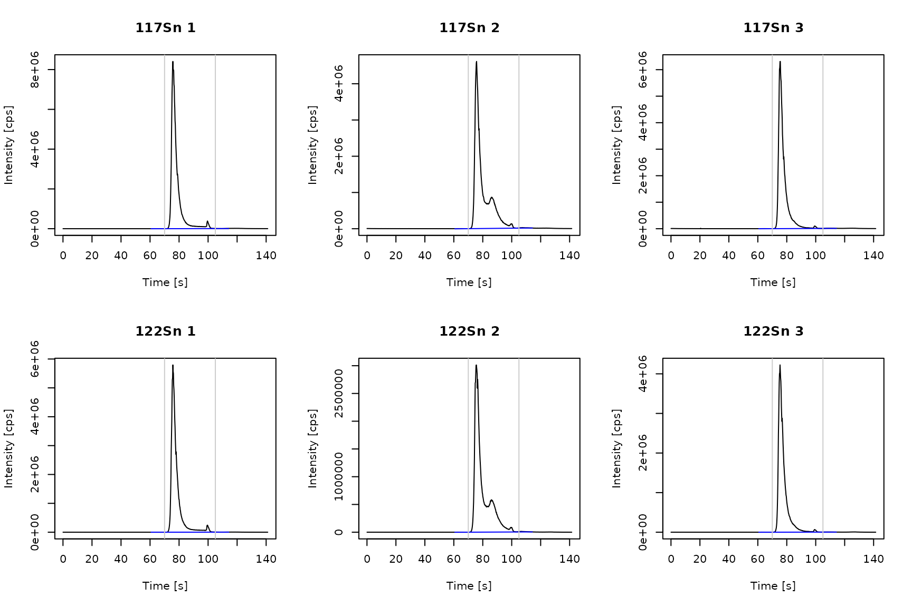
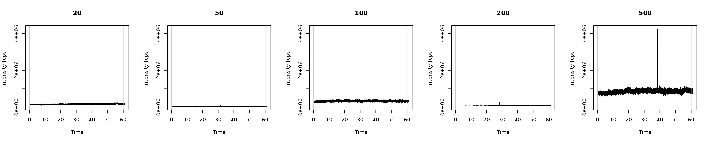
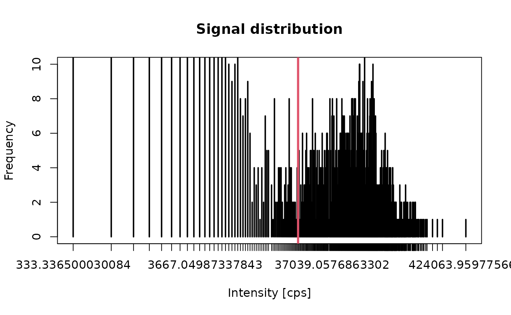
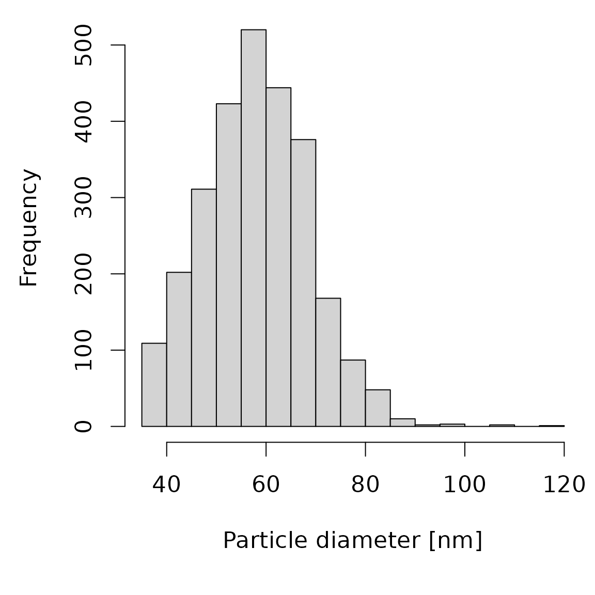
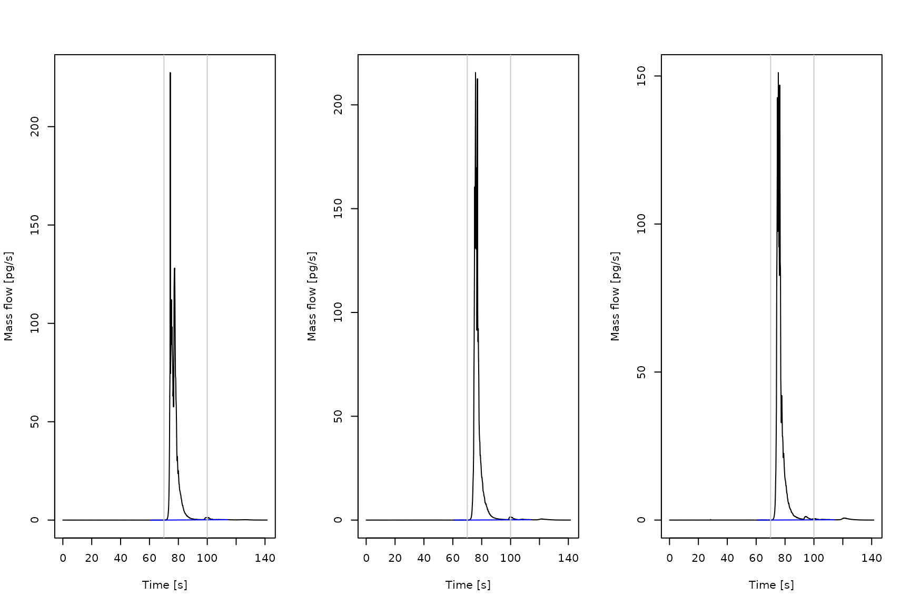
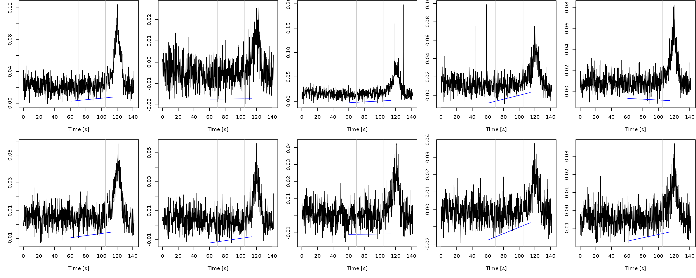

On-line isotope dilution mass spectrometry (oIDMS) workflow
Vera Scharek and Jan Lisec
Source:vignettes/workflow_oIDMS2.Rmd
workflow_oIDMS2.RmdIntroduction
On-line IDMS is a variation of IDMS. The isotope-enriched spike is not mixed with sample prior to a separation technique but continuously added before the mass spectrometer. This provides the advantage of using a species unspecific spike since the spike does not undergo the same treatment as the sample. For ETV measurements, on-line IDMS enables utilizing a spike with a different vaporization behavior to the analyte and automatizes the spike introduction.
This workflow describes the data treatment for on-line IDMS based on a published on-line ETV/ICP-IDMS approach. The spike aerosol was generated through a low-flow nebulizer and merged with the ETV sample aerosol in a modified cyclonic spray chamber prior to ionization in the plasma. In the following, the enriched spike isotope will be referred as isotope 1 or spike isotope while isotope 2 or sample isotope denotes the isotope used for calculating the isotope ratios.
It has to be noted that although it is possible to compute the calculations for ICP-OES data only MS data will provide valid results.
Example measurements of tin in a sediment reference material are provided the ETVapp package and can be accessed through the library.
library(ETVapp)
td <- ETVapp::ETVapp_testdata[["oIDMS"]]Mass bias
The transmission of ions is influenced in regard to their mass during ionization, passing the ion optics, mass separation and detection. To correct the mass bias, a correction factor K is determined by the analysis of a sample (or standard) without spike addition. The package provides a triplicate measurement of the reference material. The following code will import the raw data files, calculate the isotope ratios based on the peak areas and return K for each input data.
mb_imp <- td[["Massbias"]]
str(mb_imp[[1]])
#> 'data.frame': 752 obs. of 7 variables:
#> $ Time : num 0.032 0.22 0.407 0.595 0.783 ...
#> $ 117Sn: num 100 233.3 166.7 100 33.3 ...
#> $ 122Sn: num 33.3 0 33.3 0 0 ...
#> $ 80Se : num 4152171 4037625 4125285 4260275 4040985 ...
#> $ 124Sn: num 33.3 66.7 66.7 33.3 0 ...
#> $ 121Sb: num 1767 1600 2000 1833 1900 ...
#> $ 125Te: num 0 33.3 33.3 0 100 ...
iso1 <- "117Sn"
iso2 <- "122Sn"
abnd1 <- 7.68
abnd2 <- 4.63
mb_peaks <- ldply_base(1:length(mb_imp), function(i) {
get_isoratio(
data = mb_imp[[i]],
iso1_col = iso1,
iso2_col = iso2,
PPmethod = "Peak (manual)",
peak_start = 70,
peak_end = 105
)
})
gt::gt(mb_peaks)| Spike isotope | Sample isotope | R_m |
|---|---|---|
| 117Sn | 122Sn | 1.471331 |
| 117Sn | 122Sn | 1.450506 |
| 117Sn | 122Sn | 1.464995 |
K <- calc_massbias(
mb_peaks[,"R_m"],
As_iso1 = abnd1,
As_iso2 = abnd2
)
print(K)
#> [1] 1.127378 1.143564 1.132254View time scans of the spike and sample isotope with peak integration parameter by computing the following code.
ps <- 70
pe <- 105
time_col <- "Time"
cf <- 50
mb_pro <- process_data(data = mb_imp, wf = "IDMS", c1 = iso1, c2 = iso2, fl = NULL)
mb_BL <- lapply(1:length(mb_pro), function(i) {
flt <- (min(which(mb_pro[[i]][,time_col]>=ps))-cf):(max(which(mb_pro[[i]][,time_col]<=pe))+cf)
ETVapp:::blcorr_col(
df = mb_pro[[i]][flt,c(time_col, iso1, iso2)],
nm = iso1,
BLmethod = "modpolyfit",
rval = "baseline",
amend = "_BL")
})
mb_BL <- lapply(1:length(mb_BL), function(i) {
ETVapp:::blcorr_col(
df = mb_BL[[i]],
nm = iso2,
BLmethod = "modpolyfit",
rval = "baseline",
amend = "_BL")
})
mb_no <- seq(1,3,1)
par(mfrow=c(2,3))
for (i in 1:3) {
plot(mb_pro[[i]][,c("Time")], mb_pro[[i]][,"117Sn"], type="l",
ylab = "Intensity [cps]", xlab = "Time [s]", main = paste("117Sn", mb_no[i]))
#lines(mb_pro[[i]][,c("Time")], mb_pro[[i]][,c("111Cd")], col=3)
lines(x = mb_BL[[i]][,c("Time")], y = mb_BL[[i]][,"117Sn_BL"], col = "blue")
abline(v=c(ps,pe), col=grey(0.8))
}
for (i in 1:3) {
plot(mb_pro[[i]][,c("Time")], mb_pro[[i]][,c("122Sn")], type="l",
ylab = "Intensity [cps]", xlab = "Time [s]", main = paste("122Sn", mb_no[i]))
#lines(mb_pro[[i]][,c("Time")], mb_pro[[i]][,c("111Cd")], col=3)
lines(x = mb_BL[[i]][,c("Time")], y = mb_BL[[i]][,"122Sn_BL"], col = "blue")
abline(v=c(ps,pe), col=grey(0.8))
}
Transport efficiency
Inserting the spike aerosol after sample vaporization may lead to a loss in regard to the sample aerosol. We included the calculation of a transport efficiency n_trans through the particle size method using a nano particle standard to correct for this effect. Equations and data processing steps included in the package are based on the Excel sheet RIKILT single particle calculation tool (version 2) published in this article. For a detailed tutorial of on single particle measurements, view the standard operating procedure.
The package provides measurement data of
- ionic solutions to establish a linear calibration curve and
- a nano particle standard of known size.
Import the files form sp_ionic. The mean signal of a
selected time window is obtained via the
get_peakdata()-function using the peak picking method
“mean_signal”. tab_cali() collects in a data.frame
with the standard concentrations. Calibration parameter are obtained
through linear regression.
spion_imp <- td[["sp_ionic"]]
str(spion_imp[[1]])
#> 'data.frame': 20355 obs. of 2 variables:
#> $ Time : num 0.006 0.009 0.012 0.015 0.018 0.021 0.024 0.027 0.03 0.033 ...
#> $ 197Au: num 143249 118398 141905 137537 136865 ...
sp_cali <- get_peakdata(spion_imp, int_col = "197Au", PPmethod = "mean signal", peak_start = 0.006, peak_end = 60)
conc_ion <- c(20, 50, 100, 200, 500)
sp_cali <- tab_cali(peak_data = sp_cali, wf = "oIDMS", std_info = conc_ion)
gt::gt(sp_cali)| Isotope | Start [s] | End [s] | Mean Signal [cps] | Concentration [µg/L] |
|---|---|---|---|---|
| 197Au | 0.006 | 60 | 156366.77 | 20 |
| 197Au | 0.006 | 60 | 30696.15 | 50 |
| 197Au | 0.006 | 60 | 322343.25 | 100 |
| 197Au | 0.006 | 60 | 70781.89 | 200 |
| 197Au | 0.006 | 60 | 844833.94 | 500 |
cali_lm <- calc_cali_mod(df = sp_cali[,c(5,4)], wf = "oIDMS")
gt::gt(cali_lm)| Slope [cps L/µg] | Slope error [cps L/µg] | Intercept [cps] | Intercept error [cps] | R square |
|---|---|---|---|---|
| 1488.358 | 483.5066 | 26030.13 | 119005.5 | 0.759532 |
Signal curves of the ionic measurements and the resulting calibration curve are plotted through:
par(mfrow=c(1,5))
for (i in 1:min(length(spion_imp), 10)) {
ylim <- c(0, max(sapply(spion_imp, function(x) {max(x[,2])})))
plot(spion_imp[[i]], type="l", main = sp_cali[i,5], ylab="Intensity [cps]", ylim=ylim)
abline(v=sp_cali[i,2:3], col=grey(0.8))
}
cm <- calc_cali_mod(df = sp_cali[,c(5,4)], wf = "oIDMS")
plot(sp_cali[,c(5,4)])
abline(a = cm[1,3], b = cm[1,1])
gt::gt(cm)| Slope [cps L/µg] | Slope error [cps L/µg] | Intercept [cps] | Intercept error [cps] | R square |
|---|---|---|---|---|
| 1488.358 | 483.5066 | 26030.13 | 119005.5 | 0.759532 |
To determine the limit for particle detection (LFD), import the
single particle data and plot the signal distribution. The LFD is shown
in red. Output parameter of the single particle analysis are obtain by
calc_transeff() and a histogram of the particle size
distribution is provided by the following code.
sp_data <- ETVapp::ETVapp_testdata[["oIDMS"]][["sp_particle"]][[1]]
# plot_signal_distribution(x = sp_data[,2], style="counts")
time_col <- "Time"
anlt <- "197Au"
t_fltr <- 60
LFD <- 20000
if (!is.null(t_fltr) && is.numeric(t_fltr) && t_fltr>min(sp_data[,time_col], na.rm=TRUE)) {
message("calc_transeff(): remove data with ", time_col, " > ", t_fltr)
sp_data_flt <- sp_data[sp_data[,time_col]<t_fltr,]
}
#> calc_transeff(): remove data with Time > 60
sig_data <- table(sp_data_flt[,anlt])
par(mfrow=c(1,1))
plot(sig_data, ylim = c(0, 10), log = 'x', ylab = "Frequency", xlab = "Intensity [cps]", main = "Signal distribution")
#> Warning in xy.coords(x, y, xlabel, ylabel, log): 1 x value <= 0 omitted from
#> logarithmic plot
abline(v=LFD, col=2, lwd=3)
V_fl <- 0.0075
size <- 60
n_trans <- calc_transeff(
sp_data_flt,
int_col = anlt,
LFD = LFD,
cali_slope = cali_lm[,1],
V_fl = V_fl,
part_mat = c("Au"),
dia_part = size
)
gt::gt(n_trans)| Signal response [cps*L/µg] | Detected particle number [/min] | Detected particle mass [fg] | Calculated trans_eff [%] |
|---|---|---|---|
| 1488.358 | 1148.766 | 15.047 | 14.5064 |
sp_data <- td[["sp_particle"]][[1]]
plot_particle_diameter(
sp_data[,c(time_col, anlt)], cali_slope = cm[1,1], V_fl = V_fl, part_mat = "Au", dia_part = size, LFD = LFD
)
Sample evaluation
Import and process the spike containing sample measurement file using the workflow “oIDMS”. Correcting the ratio on the column “R_m” provides mass bias corrected values “R_corr”. The implemented IDMS equation for the mass flow calculation is adapted from Rottmann and Heumann. A minimum isotope ratio is required determined by the ratio of the natural isotope abundances. A result table is obtained by consequent peak evaluation.
samp_imp <- td[["Samples"]]
samp_ion <- lapply(1:length(samp_imp), function(i) {
x <- process_data(data = samp_imp[[i]], wf = "oIDMS", c1 = iso1, c2 = iso2, fl = 5)
x[,"R_corr"] <- x[,"R_m"] * mean(K)
return(x)
})
gt::gt(head(samp_ion[[1]]))| Time | 117Sn | 122Sn | R_m | R_corr |
|---|---|---|---|---|
| 0.032 | 2438466 | 2900.240 | 840.7809 | 953.7812 |
| 0.220 | 2339865 | 2333.489 | 1002.7327 | 1137.4991 |
| 0.408 | 2227398 | 2166.800 | 1027.9665 | 1166.1243 |
| 0.595 | 2268996 | 2800.223 | 810.2909 | 919.1933 |
| 0.783 | 2471078 | 2766.885 | 893.0902 | 1013.1208 |
| 0.971 | 2248351 | 2566.854 | 875.9169 | 993.6393 |
sample_mass <- c(1.0119, 0.9042, 0.9151)
result_df <- ldply_base(1:length(samp_ion), function(i) {#'
x <- samp_ion[[i]][,c("Time","R_corr")]
x[,"mf_s"] <- calc_massflow(x = x[,"R_corr"], n_trans = n_trans[,4], As_iso1 = abnd1, As_iso2 = abnd2, Asp_iso1 = 91.06, Asp_iso2 = 0.08, V_fl = 0.0075, c_sp = 19581.71, DF = 20)
pk <- get_peakdata(x, int_col = "mf_s", PPmethod = "Peak (manual)", peak_start = 70, peak_end = 100, minpeakheight = 1000)
tab_result(pk, wf = "oIDMS", K = K, amae = pk[,4], mass_fraction2 = 1, sample_mass = 1)
})
#> The minimum isotope ratio is below the required value for IDMS calculation. Increasing spike amount or selection of different isotopes is necessary.
#> The minimum isotope ratio is below the required value for IDMS calculation. Increasing spike amount or selection of different isotopes is necessary.
#> The minimum isotope ratio is below the required value for IDMS calculation. Increasing spike amount or selection of different isotopes is necessary.
gt::gt(result_df)| Start [s] | End [s] | BLmethod | Analyte mass as element [pg] | Sample mass [mg] | Content as element [ppb] |
|---|---|---|---|---|---|
| 70 | 100 | modpolyfit | 547.4301 | 1 | 547.4301 |
| 70 | 100 | modpolyfit | 600.9719 | 1 | 600.9719 |
| 70 | 100 | modpolyfit | 457.3979 | 1 | 457.3979 |
View the mass flow diagram to check the integration of the mass flow peak(s).
Asp_iso1 <- 91.06
Asp_iso2 <- 0.08
V_fl <- 0.0075
c_sp <- 19581.71
DF <- 20
mf_sp <- 0.0075 * n_trans[,4] * (1 / 60) * (c_sp / DF)
mf_data <- lapply(1:length(samp_ion), function(i) {
mf_s <- mf_sp * ((Asp_iso1 - (samp_ion[[i]][,"R_corr"] * Asp_iso2)) / ((abnd2 * samp_ion[[i]][,"R_corr"]) - abnd1))
x <- cbind(samp_ion[[i]][,c("Time","R_corr")], mf_s)
})
mf_BL <- lapply(1:length(mf_data), function(i) {
flt <- (min(which(mf_data[[i]][,time_col]>=ps))-cf):(max(which(mf_data[[i]][,time_col]<=pe))+cf)
ETVapp:::blcorr_col(
df = mf_data[[i]][flt,c(time_col,"mf_s")],
nm = "mf_s",
BLmethod = "modpolyfit",
rval = "baseline",
amend = "_BL")
})
par(mfrow=c(1,3))
for (i in 1:length(mf_BL)){
plot(x = mf_data[[i]][,"Time"], y = mf_data[[i]][,"mf_s"], type="l", ylab="Mass flow [pg/s]", xlab="Time [s]")
lines(x = mf_BL[[i]][,c("Time")], y = mf_BL[[i]][,3], col = "blue")
abline(v=c(result_df[i,1:2]), col=grey(0.8))
}
Limits of detection and quantification
To determine the limit of detection (LOD) and quantification (LOQ), the ETVapp package includes ten blank measurements with spike. Perform data treatment of the blank files analog to the samples files (import, optional smoothing, mass bias correction, and mass flow calculation). A data.frame containing result data is generated by the following code.
blk_imp <- ETVapp::ETVapp_testdata[["oIDMS"]][["Blanks"]]
blk_ion <- lapply(1:length(blk_imp), function(i) {
x <- process_data(data = blk_imp[[i]], wf = "oIDMS", c1 = iso1, c2 = iso2, fl = 5)
x[,"R_corr"] <- x[,"R_m"] * mean(K)
x[,"mf_s"] <- calc_massflow(x = x[,"R_corr"], n_trans = n_trans[1,4], As_iso1 = abnd1, As_iso2 = abnd2, Asp_iso1 = 91.06, Asp_iso2 = 0.08, V_fl = V_fl, c_sp = c_sp, DF = DF)
return(x)
})
print(str(blk_ion[[1]]))
#> 'data.frame': 755 obs. of 6 variables:
#> $ Time : num 0.032 0.22 0.408 0.595 0.783 ...
#> $ 117Sn : num 1148182 1237134 1237527 1123988 1229097 ...
#> $ 122Sn : num 2700 1867 1967 2133 1800 ...
#> $ R_m : num 425 663 629 527 683 ...
#> $ R_corr: num 482 752 714 598 775 ...
#> $ mf_s : num 0.0419 0.0158 0.0183 0.0278 0.0144 ...
#> NULL
LOX_pks <- get_peakdata(pro_data = blk_ion, int_col = "mf_s", PPmethod = "Peak (manual)", peak_start = ps, peak_end = pe, minpeakheight = 1000)
LOX_df <- tab_result(LOX_pks, wf = "oIDMS", K = K, amae = LOX_pks[,4], mass_fraction2 = 1, sample_mass = 1)
gt::gt(LOX_df)| Start [s] | End [s] | BLmethod | Analyte mass as element [pg] | Sample mass [mg] | Content as element [ppb] |
|---|---|---|---|---|---|
| 70 | 105 | modpolyfit | 0.5665880 | 1 | 0.5665880 |
| 70 | 105 | modpolyfit | 0.4079879 | 1 | 0.4079879 |
| 70 | 105 | modpolyfit | 0.5368494 | 1 | 0.5368494 |
| 70 | 105 | modpolyfit | 0.4679495 | 1 | 0.4679495 |
| 70 | 105 | modpolyfit | 0.5329198 | 1 | 0.5329198 |
| 70 | 105 | modpolyfit | 0.4185505 | 1 | 0.4185505 |
| 70 | 105 | modpolyfit | 0.4100992 | 1 | 0.4100992 |
| 70 | 105 | modpolyfit | 0.3823680 | 1 | 0.3823680 |
| 70 | 105 | modpolyfit | 0.3363395 | 1 | 0.3363395 |
| 70 | 105 | modpolyfit | 0.3486964 | 1 | 0.3486964 |
Mass flow diagrams of the blank measurements are plotted as follows.
blk_BL <- lapply(1:length(blk_ion), function(i) {
flt <- (min(which(blk_ion[[i]][,time_col]>=ps))-cf):(max(which(blk_ion[[i]][,time_col]<=pe))+cf)
ETVapp:::blcorr_col(
df = blk_ion[[i]][flt,c(time_col,"mf_s")],
nm = "mf_s",
BLmethod = "modpolyfit",
rval = "baseline",
amend = "_BL")
})
par(mfrow=c(2,5))
par(mar=c(5,3,0,0)+0.1)
for (i in 1:min(length(blk_ion), 10)) {
plot(x = blk_ion[[i]][,"Time"], y = blk_ion[[i]][,"mf_s"], type="l", main = names(blk_ion)[i], ylab="Mass flow", xlab = "Time [s]")
lines(x = blk_BL[[i]][,c("Time")], y = blk_BL[[i]][,3], col = "blue")
abline(abline(v=c(LOX_df[i,1:2]), col=grey(0.8)))
}
The LOD and LOQ are computed as three and ten times the standard
deviation by calling tab_LOX().
| LOD as element [pg] | LOQ as element [pg] | Sample mass [mg] | LOD per sample mass [ppb] | LOQ per sample mass [ppb] |
|---|---|---|---|---|
| 0.2441205 | 0.8137351 | 1 | 0.2441205 | 0.8137351 |